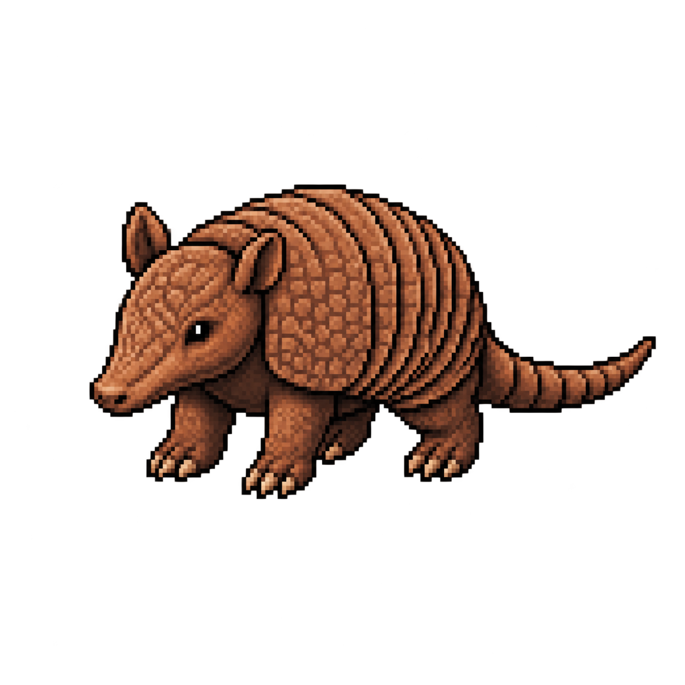

AMIGOS DO SILAS • AVENTURA DE TADEU
O Rastro
da Caatinga
Memorize as frações antes que a poeira apague o caminho.
Sua missão: encontre a trilha que responde ao desafio.
Pratique com as pistas à vista ou teste a memória no modo Desafio.
1 Observe→2 Memorize→3 Escolha
